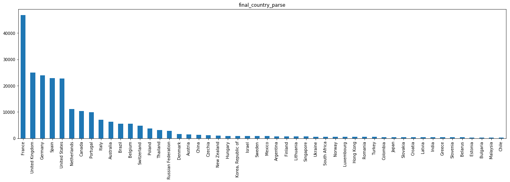

Airbnb in Porto district
In this analysis the following questions will be addressed:
- Who is booking Airbnb rooms in Porto? (Profiling)
- Where do they choose to stay? (Geographic analysis)
- When do they do it? (Time Series analysis)
All the data was provided by Nova School of Business and Economics' research centre: Data Science for Social Impact and Management.
This analysis is focused on Smart Tourism Management in Portugal and was developed for Turismo de Portugal, a public national institution responsible for the promotion, enrichment and sustainability of Tourism in the country.
Analysis of All Datasets
Property Listings
We’ll start off by analysing the location of the properties listed in Airbnb. Listings are mainly concentrated in the central region of Porto municipality. Additionally, it is important to note the low concentration of listings around the region of Gaia, although it is close to the historic centre.
Most of these listings are referring to entire home/apartments, as the number of private rooms represent less than half the number of the former type.
Listing Reviews
To extract information from this dataset some basic Text Mining techniques were required. This is because none of the data regarding user information is standardized. Although we have some details regarding the user's profile, namely its first name, country of origin, state (if applicable), city of origin, a brief user description, last attended teaching institution and occupation, none of it can be directly used for analysis without prior pre-processing (for the goal of this analysis, the priority was given to the parsing of the country of origin out of the non-standardized text fields: Country and City). This was done by developing a script to detect names of cities and countries out of these two variables. Then, the cities were associated to the corresponding country, followed by a final correction of wrongly assigned countries. Finally, the results from the two parsing processes were merged into a final solution. Out of approximately 245 thousand reviews’ country of origin, 6 thousand were left unparsed (i.e., unsuccessful parse). Finally, this is the top 50 countries of origin for tourists in Porto:
It becomes clear that the number of French Airbnb users in Lisbon is extremely high, which might be caused by two factors: 1) the seasonal immigrant flows from France into Portugal throughout the summer; 2) Airbnb’s popularity in France, which according to Google trends it is in fact, the country in which Airbnb is most popular:
Additionally, the distribution of tourists’ countries of origin in Porto is considerably different than the one from Lisbon and Portugal.
Modelling
To analyse patterns in the data, we will start by segmenting Property Listings by geographic location and value. Afterwards, we will associate the generated clusters to the customer data and bookings data.
From the correlation matrix in the Listings table we can extract some insights regarding how variables can (with causality or not) affect Airbnb listing value:
Clustering
Geographic Clustering
We started by clustering listings geographically using the borders of each Municipality in Lisbon. To do this, we only used the variables Latitude and Longitude. We started by using a shapefile (source: GADM) to determine to which district each listing belonged to. Afterwards, facing the existence of listings with inaccurate location which because of this reason were not included in any municipality (e.g., listings located in a river or the sea), we used the K-nearest neighbours algorithm (with K=3) to classify these listings.
We will analyse the characteristics of the defined regions:
Value Clustering
We will use all variables that relate to the listing’s value as a tourism hosting, which in this case would be the Annual Revenue, Average Daily Rate, Occupancy Rate and Number of Bookings. The reason we did not pick the Number of Reviews for a listing is because it is highly correlated with the number of bookings. Hence, in order to avoid a bias in the clustering process, this variable was discarded. Additionally, we also filtered out listings whose annual revenues were clear outliers (>$10 million) and also listings whose number of reservations in the last twelve months was lower than 5 (as these will correspond either to overly recent listings, or inactive listings).
The elbow method will be applied to determine the number of K:
Along the increase of K, the decrease rate of inertia becomes lower when K=5. Considering the classification intuition behind value clustering (distinguish between high, medium-high, medium, medium-low and low value listings) 5 clusters will represent our preferred number of clusters.
When analysing results of the value clustering, we can see that the 5 clusters have very heterogeneous characteristics.
Geographic Analysis
The number of reservations throughout the time frame available are highly seasonal and has increased greatly over time. However, this increase can be attributed to both the rise in popularity of Airbnb as well as Portugal as a touristic destination, being impossible to distinguish how the two factors impact this behaviour. The data analysed refers solely to bookings in Airbnb’s platform. Porto yields a crushing majority of the total bookings in the region, whereas the second main destination corresponds to Vila Nova de Gaia.
Finally, one can also conclude that the most outer regions of Porto yield the lowest number of bookings.
Regarding the generated revenue by each municipality, one can see that the proportion is relatively similar to the number of bookings across municipalities.
Using the average occupancy rate for each district, we can now analyse the balance between Demand and supply of Airbnb bookings, considering the number of days each listing has been booked. One can see that the occupancy rates are extremely seasonal, having Porto municipality the smallest seasonality in this variable. Furthermore, Vila Nova de Gaia is second municipality with the highest occupancy rates in the high season (one must take into account that regions like Alenquer are nearly irrelevant for this analysis, given the low number of listings located in this area).
Below is represented the estimated length of stay per Airbnb tourist in each district. As previously mentioned, the of length of stay in regions with low Airbnb activity can vary inexplicably given such fact. Although, it is visible that the length of stay in Porto municipality is considerably lower when compared to the other regions.
Country of Origin Analysis
The existent data regarding country of origin was extracted from the reviews table. This table contains public reviews made by users after their stay in the listed offer. One must bear in mind that Airbnb differentiates reviews by public and private feedback, both for hosts and guests. So, in this situation we are analysing a sample of user profiles that represent 10% of the total bookings that were actually completed. Although this sample is statistically significant (even though it was not randomly generated), it is important to be aware that the analysis of profiles by country of origin are being made from a sample, instead of the overall bookings.
In the presented plot we can analyse the number of reviews for each month through the available years in the provided data.
We can see that tourist behaviour regarding month of visit is relatively equal across different nationalities, being the peak of tourists in the summer period, comprehended between June and October. Although, three different tourist patterns arise.
Tourists coming from mainly southern Europe countries such as Portugal, Spain, France and Italy are highly concentrated in the month of August, with a local maximum in the months between March and May.
Tourists from Australia, Belgium, Canada, United Kingdom and United States register similar visiting periods. These visitors, unlike the ones previously mentioned, have their booking peaks in two different months, July and September.
As a third pattern, we can see Germany and Poland with their local maxima in September, with relatively high booking counts in the remaining months of the high season.
Below is presented the Average Daily Rate paid by the average tourist from each country of origin. We can see that eastern countries represent the ones with the least purchasing power, whereas central European tourists spend an average amount of money on Airbnb Bookings.
Below is depicted the estimated average length of stay for each origin. It is possible to assess that the time of stay does not vary significantly across country of origin:
Value Analysis
In the plot presented below is represented the RevPAR (Revenue Per Available Room) of each municipality. Although Porto municipality does not possess one of the highest values in the high season, it presents the least varying RevPAR throughout the period of analysis, while still being one of the municipalities with the highest values.
Finally, the growth of Bedroom supply in each municipality has grown, especially in Porto. One must mention that given the available data (until January 2018 in the case of listing data in Airbnb’s platform), the growth of bedroom supply from 2017 to 2018 is yet to be known.